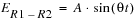
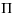
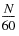
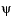

|
|
|||||||||
|
|
|
|
|
|
|
|
|
|
|
This chapter describes the following resolver model:
A resolver is rotatory transformer which provides output or information on the basis of its rotor position angle  . The output is used in control circuits to provide velocity and position information of rotating objects. The symbol of the resolver is given below.
. The output is used in control circuits to provide velocity and position information of rotating objects. The symbol of the resolver is given below.
The resolver is energized with AC voltage applied to input pins R1 and R2. The AC voltage is transferred to the rotor winding (not shown) with transfer ratio given by the parameter T_Ratio. Rotor winding then induces voltage on the two output stator winding with pins S1-S3 and S2-S4; these windings are configured 90degrees from each other.
The phase and the frequency of the voltage induced on the two output stator windings are same as the input signal. However, the amplitude of the output voltages is a function of sine and cosine of the rotor position angle.
The equation of input output voltage and their relationship is given below:

ES1-S3 = T_Ratio. A .sin().sin(t +
)
ES2-S4 = T_Ratio. A .cos().cos(
t +
)
Where,
A = Amplitude of input signal
ER1-R2 = Input voltage
ES1-S3 = Output voltage of winding S1-S2
ES2-S4 = Output voltage of winding S3-S4
T_Ratio = Transfer ratio from input to output
θ = Rotor angle
ψ = Phase shift
The value of the rotor angle is given as:
=2× ×Time
Where,
N = Speed of the rotor
P = Magnetic pole pairs in rotor
T_Ratio, N, P and(PHASE) are directly configured in the symbol.
Note: This model expects the parameter PHASE or () in absolute time instead of angle. Thus user needs to convert phase shift in terms of time. For example, if the input signal competes its half cycle at 0.5ms then in order to get phase shift of 30o, divide 0.5ms by 6 which gives PHASE equal to 0.083ms.
The application circuit shown has input pin R1 and R2 connected to two sine sources. The input voltage is thus differential voltage across the two pins, ER1-R2.
On simulating the above circuit in transient analysis the output waveform is:
The RESOLVER simulation model is available in the ANL_MISC library.
The schematic symbols for the model can be found in following location.

|
OrCAD Capture/CIS: <INSTALLDIR>/tools/capture/Library/PSpice/ ANL_MISC.olb |
|
|
Allegro Design Entry HDL: <INSTALLDIR>/share/library/ANL_MISC |